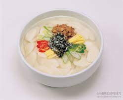

- 소고기는 찬물에 담가 핏물을 뺀 후 덩어리 째 삶습니다.
- 소고기를 건져 적당한 크기로 잘라 놓습니다.
- 달걀을 환자와 노른자로 따로 분류해서 고명을 만들어 놓습니다.
- 두부와 김도 적절한 길이로 썰어줍니다.
- 떡국 떡을 물에 씻어 건진 후 소고기를 끓인 육수에 넣고 끓여줍니다.
- 떡국이 한소끔 긇으면 대파와 마진 마늘을 넣고 재래간장 조금과 소금을 넣고 간을 맞춥니다.
- 만들어 놓은 고명(소고기,달걀지단,두부,김)을 올리고 그릇에 예쁘게 담습니다.